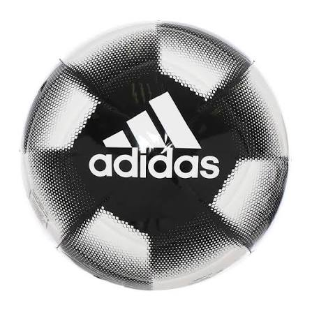

¿Como elegir un balon?
Para elegir un balón debemos considerar el tamaño, el material, la superficie donde será utilizado y el tipo de actividad que realizaremos.
Un balon adecuado permite mejorar la experiencia de juego y mantener un mejor control durante los entrenamientos y partidos.
← Volver al blog